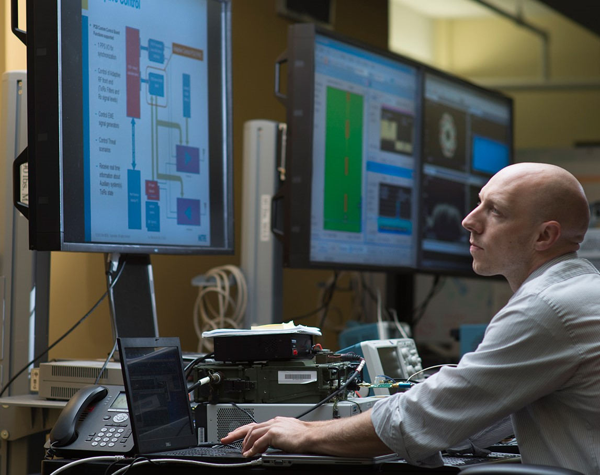

Definisi
Sistem Informasi adalah bidang yang menggabungkan ilmu komputer dengan bisnis dan manajemen. Disini kamu akan belajar gimana mengidentifikasi kebutuhan dan proses bisnis perusahaan berdasarkan data-data yang dimiliki perusahan, kemudian merancang sistem yang sesuai dengan kebutuhan perusahaan. Jadi selain belajar teknik pemrograman, kamu juga dituntut untuk mempelajari proses bisnis yang ada di perusahaan.
Prospek Kerja

Businenss Analyst
Seiring dengan meningkatnya aplikasi IT dalam bisnis, maka Business Analyst juga semakin dibutuhkan. Keberadaan seorang Business Analyst sangat penting, salah satunya menjadi penghubung antara manajemen dengan pemegang saham serta antara tim IT dengan user.
Web Developer
Seorang Web Developer membuat program aplikasi untuk suatu website. Web Developer-lah yang membuat website dari nol hingga tampilannya menarik dan setiap fungsinya dapat digunakan.
IT Consultant
Seorang IT Consultant biasanya membantu klien yang ingin menggunakan IT. IT Consultant juga membantu perusahaan dalam meningkatkan struktur dan efisiensi sistem IT-nya.

System Engineer
Tugas seorang System Engineer memang mendesain dan mengatur sistem yang kompleks. System Engineering sendiri merupakan bidang interdisipliner yang menggabungkan rekayasan dan manajemen rekayasan – kompleks, bukan?